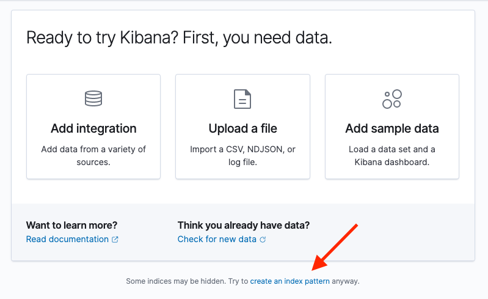

View web crawler events logsedit
App Search stores its web crawler logs in Elasticsearch. Kibana provides two user interfaces to view these logs: Discover and Logs.
For a complete reference of all events, see Web crawler (beta) events logs reference.
View web crawler events logs in Discoveredit
To view crawler logs in Discover, you must first configure a Kibana index pattern. If no index patterns have been created, Kibana will automatically direct you to the appropriate page. Otherwise, navigate to Stack Management → Index Patterns via the left sidebar.
Crawler events are logged within the enterprise-search set of system indices, so Kibana will not recognize available data by default.
-
Select Try to create an index pattern anyway at the bottom of the data panel.
 -
On the Create index pattern page, toggle the selection for Include system and hidden indices.
Set the index pattern name to
.ent-search-crawler-*-logs*, then continue on to settings configuration.
-
From settings, select
@timestampas the primary time field, and create the index pattern. - Navigate back to the Discover UI, select your newly created index pattern, and you are ready to begin exploring your crawl events in detail!
You will likely want to set up some custom columns in Discover to more easily discern crawl events at a glance.
To add a new column, select an entry from the list of available fields on the left sidebar.
Handy columns for crawler events include crawler.crawl.id, url.domain, url.path, event.action, and http.response.status_code.
View web crawler events logs in Logsedit
To view crawler logs in Logs, you must first configure a source configuration.
- Navigate to Logs UI via the left sidebar, under Observability.
- Select Change source configuration.
-
Provide a name such as "Crawl Events" for this log source, and specify
.ent-search-crawler-*-logs*as the index pattern. -
Configure any desired custom columns. A nice place to start is by removing the preset
event.datasetandmessageoptions and addingcrawler.crawl.id,url.domain,url.path,event.action, andhttp.response.status_code.Autocomplete will be available on these columns after the initial source configuration has been applied. You can edit these settings at any time.
- Apply the configuration, navigate to Stream, and you are ready to begin exploring your crawl events in detail!